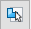

Publish Internal Components dialog box
Use the dialog box to change the location where the file is to be saved, the template used to create the Solid Edge file, and the material for the new part files.
- Edit file location(s)
-
Edits the location where the published files are saved. By default, the file location is the location where the assembly was saved after import.
You can change the file location as follows:
-
To change the location of an individual file, click the cell associated with the file in the File Location column, and then click the Edit file location(s) button to display the Select Folder dialog box. On the Select Folder dialog box, select the new folder and then click the Select Folder button.
Note:You can hold the Ctrl key and click additional cells to change the file location for multiple files.
-
To change the location of all files, click the File Location header or the Parts or Assemblies node, and then click the Edit file location(s) button to display the Select Folder dialog box. On the Select Folder dialog box, select the new folder and then click the Select Folder button.
-
- Edit template(s)
-
Edits the template used to create the Solid Edge files. By default, the templates used for new file creation are used.
You can change the template as follows:
-
To change the template for an individual file, click the template cell associated with the file, and then click the Edit template(s)

button to display the New dialog box. On the New dialog box, click the template you want to use and then click OK. If you want, you can set the sheet metal template as well, instead of part template.Note:To change the file location for multiple files, you can hold the Ctrl key and click additional files.
-
To change the template of all files, click the empty cell common to the Parts row or Assemblies row and the Template column, and then click the Edit template(s) button . On the New dialog box, click the template you want to use and then click OK.
-
- Reset file location(s)
-
Restores the file location to the default.
You can reset the file location as follows:
-
To reset the location of an individual file, click the file location cell corresponding to the internal component, and then click the Reset file location(s) button .
Note:You can hold the Ctrl key and click additional cells to reset the file location for multiple cells.
-
To reset the location of all files, click the File Location header, and then click the Reset file location(s) button .
-
- Reset template(s)
-
Restores the template to the default.
You can reset the template as follows:
-
To reset the template of an individual file, click the template cell corresponding to the internal component, and then click the Reset template(s) button .
Note:To reset the template for multiple files, you can hold the Ctrl key and click additional cells.
-
To reset the template of all files, click the Template header, and then click the Reset template(s) button .
-
- Reset material(s)
-
Restores the material to the default.
You can reset the material as follows:
-
To reset the material of an individual file, click the material cell corresponding to the internal component, and then click the Reset material(s) button .
Note:To change the material for multiple files, right-click the material in one cell, and then click Copy on the shortcut menu. Select the material cells for the files that you want to change, right-click and then click Paste.
-
To reset the material for all files, click the Material header, and then click the Reset material(s) button .
-
- Material list
-
In the Materials column, for internal components that have no material assigned and are listed as (None), you can use the adjacent list button to select a material to apply to the internal component.
- Publish
-
Publishes the internal components by creating an assembly with the associated documents.
How do I
Create an internal component in an assemblyApply a material to internal components
Publish internal components
Learn more
Working with internal componentsPublishing internal components
Look up more details
Create Internal Component commandCreate Internal Component Options dialog box
Create Internal Component command bar
Activate Internal Component command
Publish Internal Components command